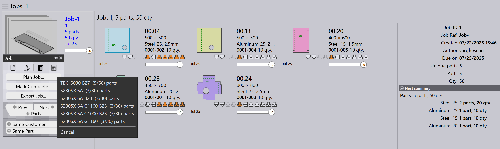
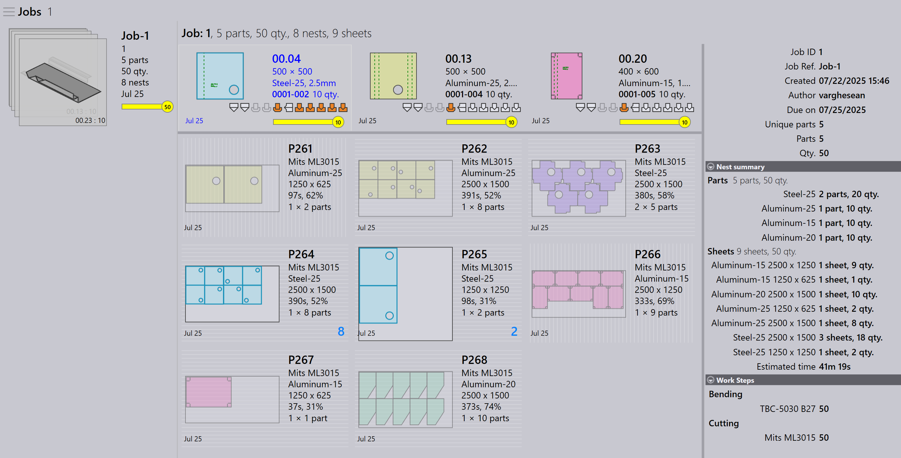

วางแผนอัตโนมัติ
การวางแผนอัตโนมัติทำให้กระบวนการวางแผนสำหรับการดัดและการตัดเป็นอัตโนมัติ ช่วยเพิ่มประสิทธิภาพการใช้งานเครื่องจักร ลดการสูญเสียวัสดุ และจัดการลำดับความสำคัญของงานอย่างมีประสิทธิภาพ
เวิร์กโฟลว์ทั่วไปคือการวางแผนชิ้นส่วนสำหรับเครื่องดัดก่อน และจากนั้นวางแผนชิ้นส่วนสำหรับเครื่องตัด
แผนการดัด
แผนการดัดกำหนดวิธีการกระจายชิ้นส่วนไปยังเครื่องดัดที่มีอยู่
ตัวอย่าง: แผนการดัดสำหรับ 5 ชิ้นส่วน (10 หน่วยแต่ละชิ้น)
-
คลิกตัวเลือก วางแผนงาน…
-
5 ชิ้นส่วน (50 หน่วย) ถูกกำหนดให้กับ TBC-5030 B27
-
หลังจากการวางแผน สถานะงานจะถูกอัปเดตเป็น Bend Planned สำหรับทั้งหมด 50 หน่วย ขั้นตอนการทำงานจะถูกอัปเดตด้วยเครื่องดัดที่กำหนดและปริมาณชิ้นส่วน


แผนการตัด - การจัดเรียง
หลังจากแผนการดัด แผนการตัดจะถูกสร้างโดยการจัดเรียงชิ้นส่วนบนเครื่องตัดที่เหมาะสม มีสองวิธีในการจัดเรียง:
วางแผนงานสำหรับการจัดเรียง - งาน
ใช้ วางแผนงาน… เพื่อจัดเรียงชิ้นส่วนทั้งหมดในงานเข้าด้วยกัน เอ็นจินการจัดเรียงจะประมวลผลชิ้นส่วนทั้งหมดโดยอัตโนมัติตามลำดับความสำคัญของงาน วันครบกำหนด และวัสดุ นี่เหมาะสำหรับเมื่อคุณต้องการให้ทั้งงานถูกจัดเรียงและส่งไปยังคิวการตัดในคราวเดียว
-
คลิก วางแผนงาน… และเลือกเครื่องใดก็ได้
-
เอ็นจิน Pmonitor เริ่มงานการจัดเรียง
-
เอ็นจินจะแบ่งงานตามความจำเป็นเพื่อเพิ่มการใช้แผ่นให้สูงสุด
| ไม่สามารถจัดเรียงโดยการกำหนดวัสดุเฉพาะให้กับเครื่องเฉพาะได้ ตัวอย่างเช่น คุณไม่สามารถจัดเรียง Material1 บน Machine1 และ Material2 บน Machine2 ในการดำเนินการเดียวกันได้ |

ที่นี่ ทั้งงานถูกจัดเรียงเป็น 5 รูปแบบการจัดบน L49-3kw สถานะงานจะถูกอัปเดตเป็น 50 : Cutting Queue
วางแผนชิ้นส่วนสำหรับการจัดเรียง - คำสั่ง
ใช้ Plan Part สำหรับการจัดเรียงในระดับคำสั่ง — นั่นคือ การจัดเรียงเฉพาะชิ้นส่วนที่เลือกจากงาน โดยทั่วไป คุณคลิกขวาที่ชิ้นส่วนและเลือก Same Material เพื่อให้มีเฉพาะชิ้นส่วนที่มีวัสดุเดียวกันถูกจัดกลุ่มและจัดเรียงเข้าด้วยกัน
นี่มีประโยชน์เมื่อคุณต้องการควบคุมว่าชิ้นส่วนใดถูกจัดเรียง — ตัวอย่างเช่น ชิ้นส่วนของวัสดุเดียวกันหรือชุดงานเฉพาะ


-
ในหน้า Job Detail คลิกขวาที่ชิ้นส่วนใดก็ได้และเลือก Same Material ชิ้นส่วนทั้งหมดที่มีวัสดุเดียวกันจะถูกเลือก
-
คลิก Plan Part… และเลือกเครื่องสำหรับการจัดเรียง
-
เอ็นจินจะประมวลผลเฉพาะชิ้นส่วนที่เลือกและสร้างรูปแบบการจัด

ที่นี่ steel-25 ถูกจัดเรียงบน Mits ML3015